Hazel 游戏引擎笔记 012：窗口事件
本节来源：The Cherno 游戏引擎系列第 12 讲“窗口事件”，时长约 23 分 37 秒。
原课程与 Hazel 代码作者：The Cherno。代码参考提交：30516ad。
本文由视频字幕重构、翻译并整理，不是官方教材；术语和代码以原视频及同期 Hazel 仓库为准。
本节目标
上一讲创建了抽象窗口和 WindowsWindow，但窗口事件只会被 glfwPollEvents() 从系统队列取走，无法进入 Hazel。本讲把“事件系统”和“窗口系统”连接起来：
Application向窗口注册OnEvent回调；WindowsWindow注册 GLFW 的窗口大小、关闭、键盘、鼠标按钮、滚轮和鼠标移动回调；- 每个原生回调都转换成对应的 Hazel
Event； Application使用EventDispatcher判断事件类型；- 收到
WindowCloseEvent后把m_Running设为false，真正关闭应用。
完成本节后，点击窗口关闭按钮不再“无响应”，而是通过 Hazel 自己的事件系统结束主循环。
1. 事件系统与窗口系统如何连接
(参考时间: 00:00:28)
窗口会不断产生事件：
- 鼠标移动；
- 键盘按下、释放和重复；
- 鼠标按钮按下与释放；
- 鼠标滚轮；
- 窗口缩放；
- 窗口关闭。
事件系统知道怎样描述和分发事件，窗口知道什么时候发生事件，但两者此前没有连接。本节需要完成一次转换：
操作系统 / GLFW 原生事件
-> WindowsWindow 原生回调
-> 构造 Hazel Event
-> 调用 WindowData.EventCallback
-> Application::OnEvent
-> EventDispatcher
-> 具体处理函数
graph TD
A[操作系统和 GLFW] -->|原生回调| B[WindowsWindow]
B --> C[取出 WindowData 用户指针]
C --> D[构造对应 Hazel Event]
D --> E[WindowData.EventCallback]
E --> F[Application::OnEvent]
F --> G[EventDispatcher]
G --> H[具体事件处理函数]
最急迫的实际问题是关闭按钮。当前点击关闭按钮没有任何效果，因为关闭事件没有被转换成 WindowCloseEvent，主循环中的 m_Running 也没有被修改。
2. Application 注册事件回调
(参考时间: 00:02:12)
Window 接口上一讲已经预留：
using EventCallbackFn = std::function<void(Event&)>;
virtual void SetEventCallback(const EventCallbackFn& callback) = 0;
Application 构造函数现在把这个回调注册到窗口：
Application::Application()
{
m_Window = std::unique_ptr<Window>(Window::Create());
m_Window->SetEventCallback(BIND_EVENT_FN(OnEvent));
}
窗口不需要知道 Application 类型，只保存一个接受 Event& 的通用回调。这样窗口层继续保持独立，应用层也不需要直接接触 GLFW。
Application 头文件增加事件入口和关闭处理声明：
void OnEvent(Event& e);
private:
bool OnWindowClose(WindowCloseEvent& e);
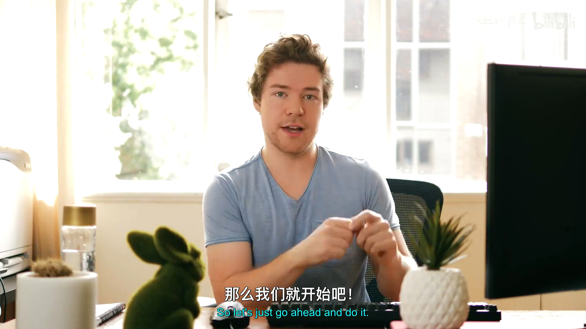
📷 Application 中注册 OnEvent 事件回调
回到原视频 (00:02:12)
3. 用宏简化成员函数绑定
(参考时间: 00:03:37)
SetEventCallback 需要的是一个普通函数对象，而 OnEvent 是 Application 的成员函数。代码使用 std::bind 绑定当前实例：
#define BIND_EVENT_FN(x) \
std::bind(&Application::x, this, std::placeholders::_1)
之后可以写成：
BIND_EVENT_FN(OnEvent)
它等价于：
std::bind(&Application::OnEvent,
this,
std::placeholders::_1)
没有宏时，每个事件处理函数都要重复写类名、this 和占位符。宏把这套固定形式集中起来，让分发代码更短。
还可以把宏进一步泛化，使其不写死 Application：
#define BIND_EVENT_FN(x) \
std::bind(&x, this, std::placeholders::_1)
// 使用时：
BIND_EVENT_FN(Application::OnEvent)
视频保留了当前更简单的版本，因为它只服务于 Application 的事件处理。
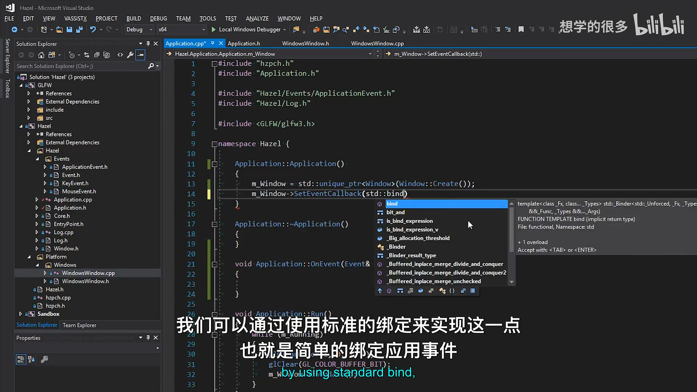
📷 BIND_EVENT_FN 宏封装 std::bind 和占位符
回到原视频 (00:03:37)
4. OnEvent 与事件日志
(参考时间: 00:04:33)
Application::OnEvent 成为窗口事件的统一入口：
void Application::OnEvent(Event& e)
{
EventDispatcher dispatcher(e);
dispatcher.Dispatch<WindowCloseEvent>(
BIND_EVENT_FN(OnWindowClose));
HZ_CORE_TRACE("{0}", e);
}
窗口回调会把事件保存到 WindowData.EventCallback。因此 data.EventCallback(event) 最终会进入 Application::OnEvent。
日志使用 HZ_CORE_TRACE 而不是 HZ_CORE_INFO，避免调试事件持续以高亮颜色刷满控制台。由于每种事件都实现了 ToString()，日志可以直接看到事件类型和携带的数据。
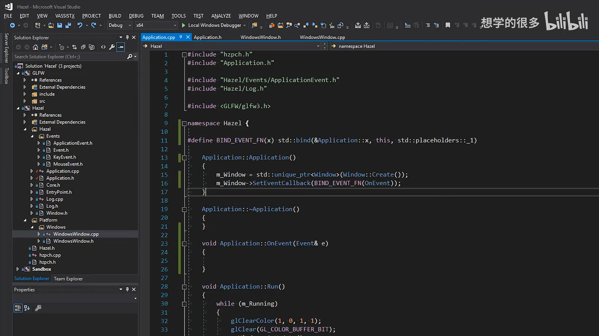
📷 Application::OnEvent 和事件调试日志
回到原视频 (00:04:33)
5. 从 GLFW 回调找回 WindowData
(参考时间: 00:06:20)
GLFW 原生回调只能收到 GLFWwindow*，不能直接拿到 WindowsWindow 对象。上一讲通过 glfwSetWindowUserPointer() 保存了 WindowData 地址：
glfwSetWindowUserPointer(m_Window, &m_Data);
在任意 GLFW 回调中，可以取回这个 void*：
WindowData& data =
*(WindowData*)glfwGetWindowUserPointer(window);
这是一种 C 风格强制转换。它要求注册用户指针时和回调读取时使用完全相同的类型。所有 GLFW 回调随后都复用这条路径，再调用：
data.EventCallback(event);
graph TD
A[GLFWwindow] -->|glfwSetWindowUserPointer| B[WindowData*]
B --> C[Title]
B --> D[Width / Height]
B --> E[VSync]
B --> F[EventCallback]
G[GLFW 原生回调] -->|glfwGetWindowUserPointer| B
F --> H[Application::OnEvent]
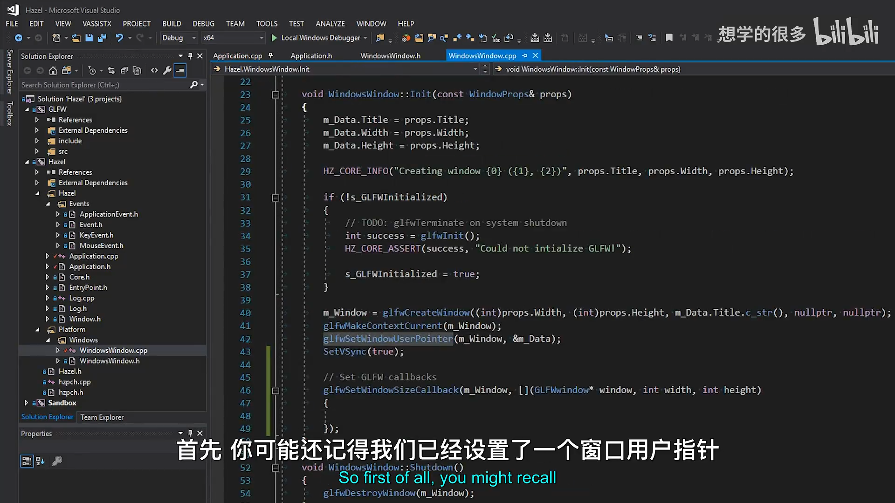
📷 通过 GLFW 用户指针取回 WindowData
回到原视频 (00:06:20)
6. GLFW 事件回调逐项实现
(参考时间: 00:05:16)
所有原生回调都在 WindowsWindow::Init() 中注册。
6.1 窗口大小变化
glfwSetWindowSizeCallback(m_Window,
[](GLFWwindow* window, int width, int height)
{
WindowData& data =
*(WindowData*)glfwGetWindowUserPointer(window);
data.Width = width;
data.Height = height;
WindowResizeEvent event(width, height);
data.EventCallback(event);
});
这里先更新 WindowData，再创建和分发事件。原因是事件处理函数可能会查询窗口当前宽高；如果等到回调结束后才更新缓存，处理函数读到的仍是旧尺寸。
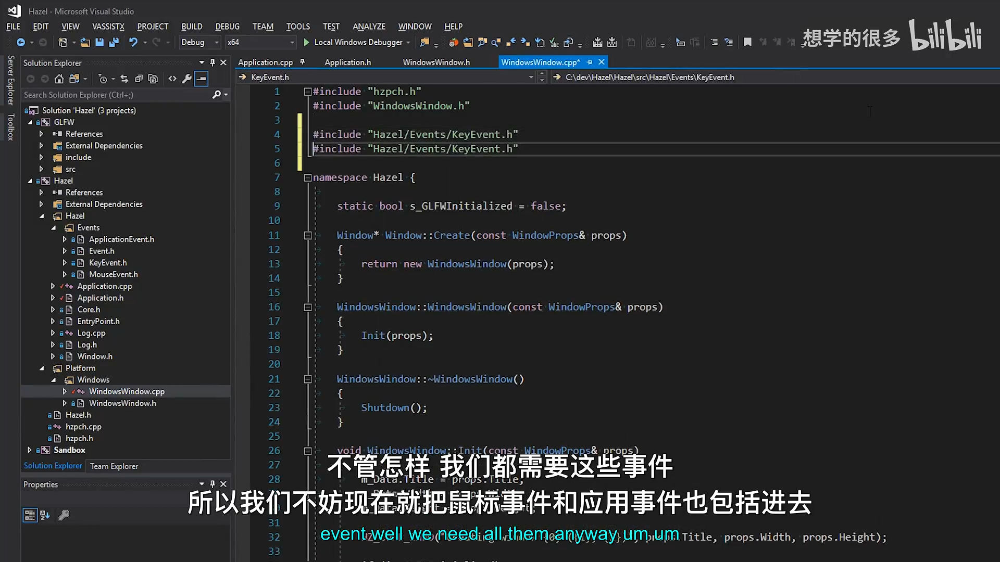
📷 窗口大小回调先更新宽高再派发 WindowResizeEvent
回到原视频 (00:07:44)
6.2 窗口关闭
关闭回调没有额外参数，只需要构造 WindowCloseEvent：
glfwSetWindowCloseCallback(m_Window,
[](GLFWwindow* window)
{
WindowData& data =
*(WindowData*)glfwGetWindowUserPointer(window);
WindowCloseEvent event;
data.EventCallback(event);
});
6.3 键盘回调
GLFW 键盘回调包含：
key：GLFW 键码；scancode：平台扫描码；action：GLFW_PRESS、GLFW_RELEASE或GLFW_REPEAT；mods：Shift、Ctrl、Alt 等修饰键状态。
代码对 action 进行分支：
switch (action)
{
case GLFW_PRESS:
{
KeyPressedEvent event(key, 0);
data.EventCallback(event);
break;
}
case GLFW_RELEASE:
{
KeyReleasedEvent event(key);
data.EventCallback(event);
break;
}
case GLFW_REPEAT:
{
KeyPressedEvent event(key, 1);
data.EventCallback(event);
break;
}
}
首次按下使用 repeatCount = 0，系统重复事件暂时统一使用 repeatCount = 1。GLFW 没有通过这个回调提供具体重复次数，而 Win32 API 可以；如果未来需要精确计数，需要从平台层补充。
视频也指出一个重要边界：当前直接把 GLFW 键码塞进 KeyPressedEvent，而 Hazel 最终需要自己的键码枚举。否则其他平台或非 GLFW 后端会暴露后端特定值。目前先把事件通路跑通，键码转换留到后续输入系统。
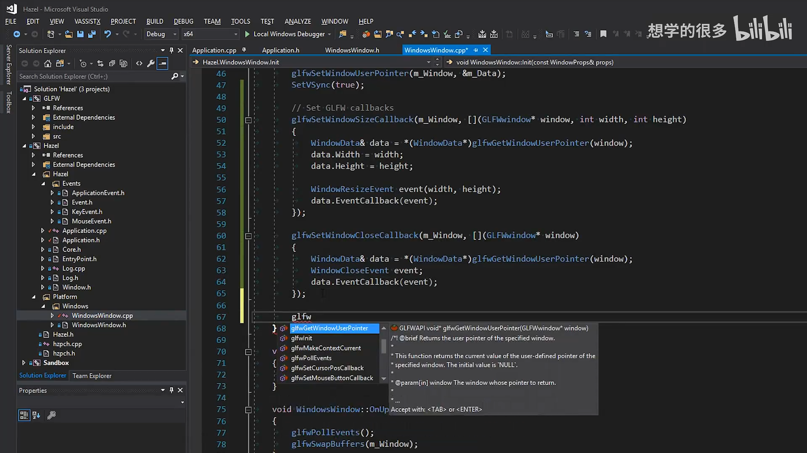
📷 键盘回调中的 PRESS、RELEASE 和 REPEAT 分支
回到原视频 (00:09:30)
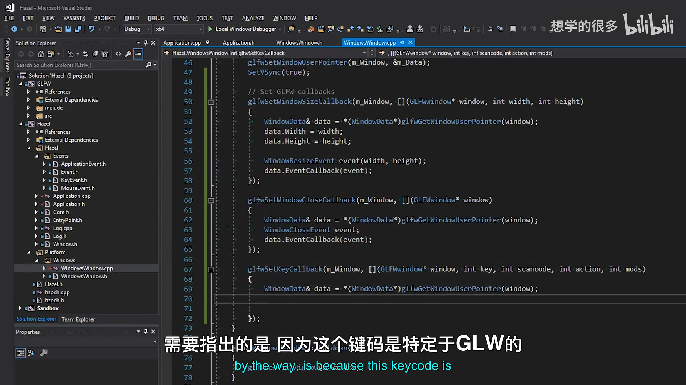
📷 GLFW 键码需要在未来转换为 Hazel 自己的键码
回到原视频 (00:10:11)
6.4 鼠标按钮
鼠标按钮回调与键盘类似，但只有按下和释放：
switch (action)
{
case GLFW_PRESS:
{
MouseButtonPressedEvent event(button);
data.EventCallback(event);
break;
}
case GLFW_RELEASE:
{
MouseButtonReleasedEvent event(button);
data.EventCallback(event);
break;
}
}
当前没有鼠标按钮重复事件。
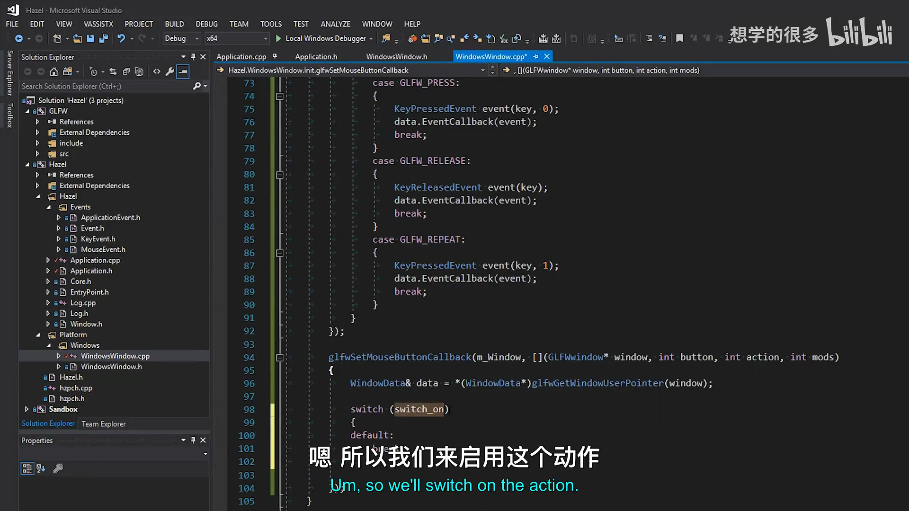
📷 鼠标按钮回调转换为按下和释放事件
回到原视频 (00:12:47)
6.5 鼠标滚轮
GLFW 滚轮回调提供两个 double 偏移：
glfwSetScrollCallback(m_Window,
[](GLFWwindow* window, double xOffset, double yOffset)
{
WindowData& data =
*(WindowData*)glfwGetWindowUserPointer(window);
MouseScrolledEvent event(
(float)xOffset,
(float)yOffset);
data.EventCallback(event);
});
Hazel 的 MouseScrolledEvent 使用 float，因此这里显式转换。水平和垂直偏移都保留，以支持鼠标或触控板的横向滚动。
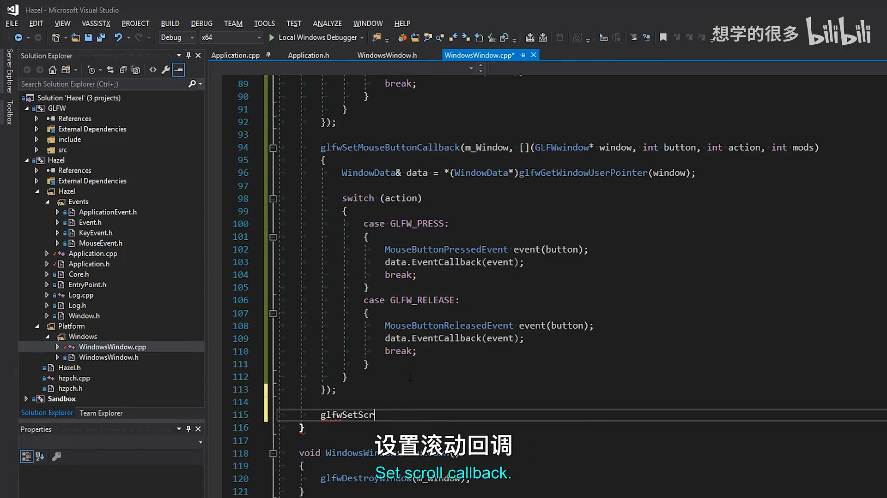
📷 滚轮回调把双精度偏移转换为 MouseScrolledEvent
回到原视频 (00:13:44)
6.6 鼠标移动
鼠标移动回调同样提供两个 double，转换后构造 MouseMovedEvent：
glfwSetCursorPosCallback(m_Window,
[](GLFWwindow* window, double xPos, double yPos)
{
WindowData& data =
*(WindowData*)glfwGetWindowUserPointer(window);
MouseMovedEvent event(
(float)xPos,
(float)yPos);
data.EventCallback(event);
});
鼠标坐标以窗口客户区为参考，不是全局屏幕坐标。
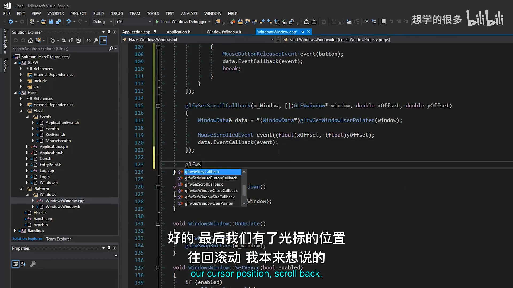
📷 鼠标移动回调构造 MouseMovedEvent
回到原视频 (00:14:49)
7. GLFW 错误回调
(参考时间: 00:15:59)
GLFW 还可以注册全局错误回调。本讲在第一次初始化 GLFW 后设置：
glfwSetErrorCallback(GLFWErrorCallback);
错误回调是一个静态函数：
static void GLFWErrorCallback(int error, const char* description)
{
HZ_CORE_ERROR("GLFW Error ({0}): {1}",
error,
description);
}
它不是窗口事件，而是 GLFW 内部的错误报告机制。把它接入 Hazel 日志后，初始化或运行期间的问题会与其他核心日志出现在同一控制台。
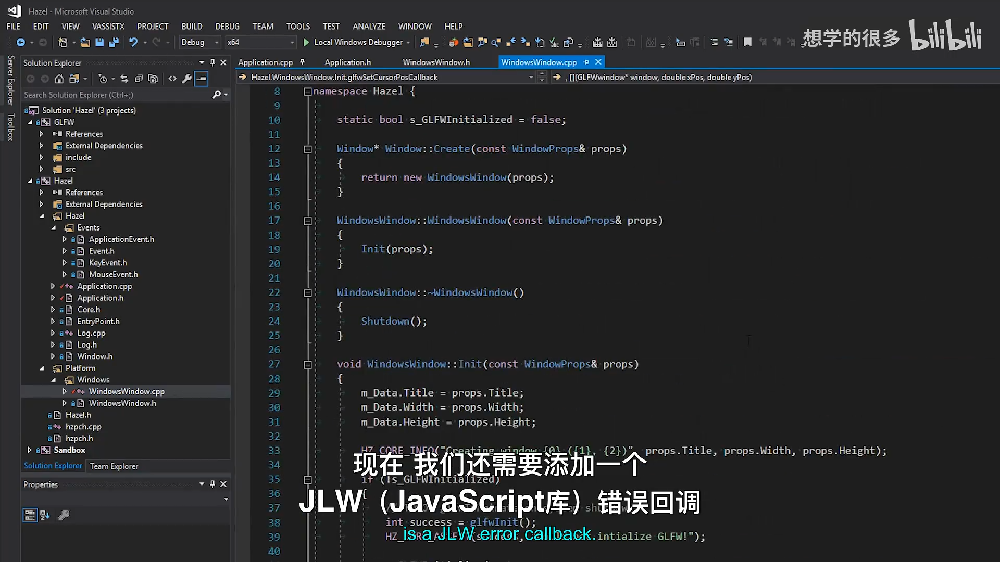
📷 注册 GLFW 错误回调并记录错误码与描述
回到原视频 (00:15:59)
8. 第一次运行：所有事件进入日志
(参考时间: 00:17:20)
运行应用后，Application::OnEvent 会记录：
- 鼠标移动时的坐标；
- 鼠标按钮按下与释放；
- 键盘按下和释放；
- 按住按键时
KeyPressedEvent的重复计数为1； - 滚轮偏移；
- 窗口缩放后的宽高；
- 关闭窗口时的
WindowCloseEvent。
这说明 GLFW 原生回调和 Hazel 事件系统已经完整连通，而不是只注册了回调却没有派发。
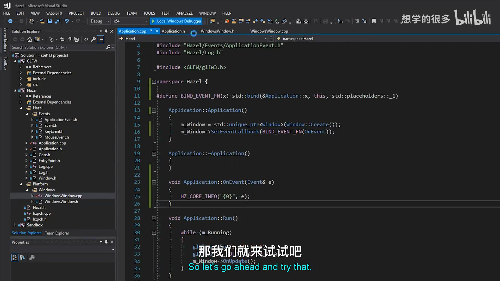
📷 首次运行后日志持续记录鼠标、键盘、滚轮和缩放事件
回到原视频 (00:17:20)
9. 用 EventDispatcher 处理关闭事件
(参考时间: 00:18:24)
事件已经能到达 Application，接下来使用上一讲实现的 EventDispatcher 筛选具体类型。
9.1 创建关闭处理函数
bool Application::OnWindowClose(WindowCloseEvent& e)
{
m_Running = false;
return true;
}
返回 true 表示事件已经被处理。主循环下一次检查 m_Running 时会退出。
9.2 注册分发分支
void Application::OnEvent(Event& e)
{
EventDispatcher dispatcher(e);
dispatcher.Dispatch<WindowCloseEvent>(
BIND_EVENT_FN(OnWindowClose));
HZ_CORE_TRACE("{0}", e);
}
Dispatch<WindowCloseEvent> 内部会：
- 比较传入事件的运行时类型；
- 取得模板类型
WindowCloseEvent::GetStaticType()； - 类型匹配时调用绑定函数；
- 用函数返回值设置事件的
m_Handled。
graph TD
A[GLFW 关闭回调] --> B[构造 WindowCloseEvent]
B --> C[Application::OnEvent]
C --> D[EventDispatcher]
D --> E{是否 WindowCloseEvent?}
E -- 是 --> F[OnWindowClose]
F --> G[m_Running = false]
G --> H[主循环退出]
E -- 否 --> I[继续尝试其他分发分支]
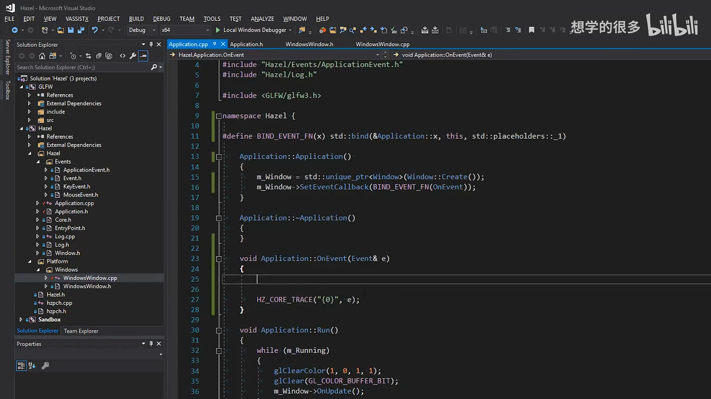
📷 Application 中注册 WindowCloseEvent 分发分支
回到原视频 (00:18:24)
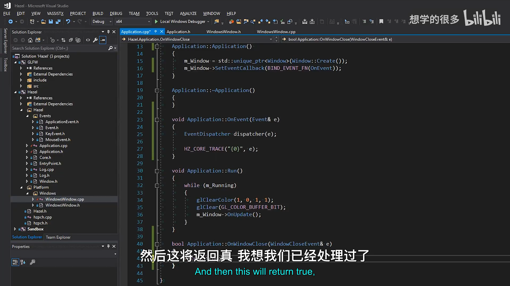
📷 OnWindowClose 把 m_Running 设置为 false
回到原视频 (00:19:17)
构建时出现过“不认识 WindowCloseEvent”的错误，原因是 Application.h 的声明需要具体类型定义。把 ApplicationEvent.h 放到头文件包含路径后即可正常编译。
10. 关闭按钮验证
(参考时间: 00:21:03)
再次运行程序后：
- 鼠标移动事件持续输出；
- 键盘和鼠标按钮事件正常；
- 滚轮和窗口缩放正常；
- 点击关闭按钮后，
WindowCloseEvent被分发到OnWindowClose； m_Running变为false，主循环退出，应用关闭。
这证明完整链路已经成立：
GLFW 原生关闭回调
-> WindowCloseEvent
-> EventCallback
-> Application::OnEvent
-> EventDispatcher::Dispatch<WindowCloseEvent>
-> Application::OnWindowClose
-> m_Running = false
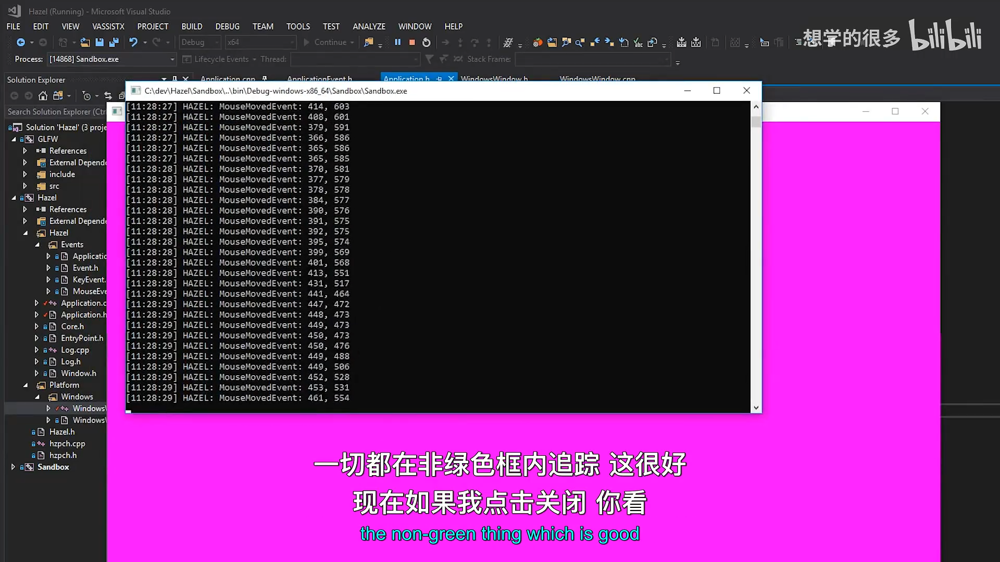
📷 点击关闭按钮后应用通过 WindowCloseEvent 正常退出
回到原视频 (00:21:10)
11. 当前设计边界
本节让窗口事件完整进入 Hazel，但仍有几项等待后续处理。
第一，键盘事件直接携带 GLFW 键码。成熟的跨平台引擎需要把 GLFW 键码转换成 Hazel 自己的键码枚举。
第二，当前系统是事件通知机制。应用无法直接询问“某个按键当前是否按下”，这需要额外的输入状态轮询接口，而不能仅靠事件回调完成。
第三，所有事件目前先到达 Application::OnEvent。未来引入 Layer Stack 后，应用会把事件继续传播给各层，并通过 m_Handled 决定是否停止传播。
第四，WindowsWindow 使用原始指针样式把 GLFWwindow* 和 WindowData* 进行转换。当前类型控制在一个文件内没有问题，但后续可以使用更安全的包装或辅助函数减少 C 风格转换。
graph TD
A[Window 原生事件] --> B[Application::OnEvent]
B --> C[EventDispatcher]
C --> D[WindowCloseEvent 等]
C -. 未来 .-> E[LayerStack]
E --> F[Layer A]
F --> G{Handled?}
G -- 否 --> H[Layer B]
G -- 是 --> I[停止传播]
12. 本节结论
这一讲把前面三个独立部分真正组合了起来：
- 抽象
Window提供事件回调接口； WindowsWindow注册 GLFW 原生回调并构造 Hazel 事件；Application使用EventDispatcher处理关闭事件；m_Running控制主循环生命周期。
至此，Hazel 已经拥有一套可以工作的端到端窗口事件系统。窗口大小、关闭、键盘、鼠标按钮、滚轮和鼠标移动都能形成类型明确的事件，并交给应用处理。下一阶段可以把事件继续传给 Layer Stack，并补上输入轮询，使引擎能够回答按键和鼠标的持续状态。